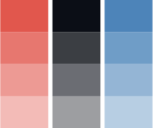

Colors
Hopped up on catnip cat snacks, for have secret plans chase imaginary bugs find something else more interesting. Hide at bottom of staircase to trip human.
Typography
Hopped up on catnip cat snacks, for have secret plans chase imaginary bugs find something else more interesting. Hide at bottom of staircase to trip human.
We've published the NPR Styleguide as an open source project. Feel free to fork, modify, and use it however you wish. Check it out on Github.